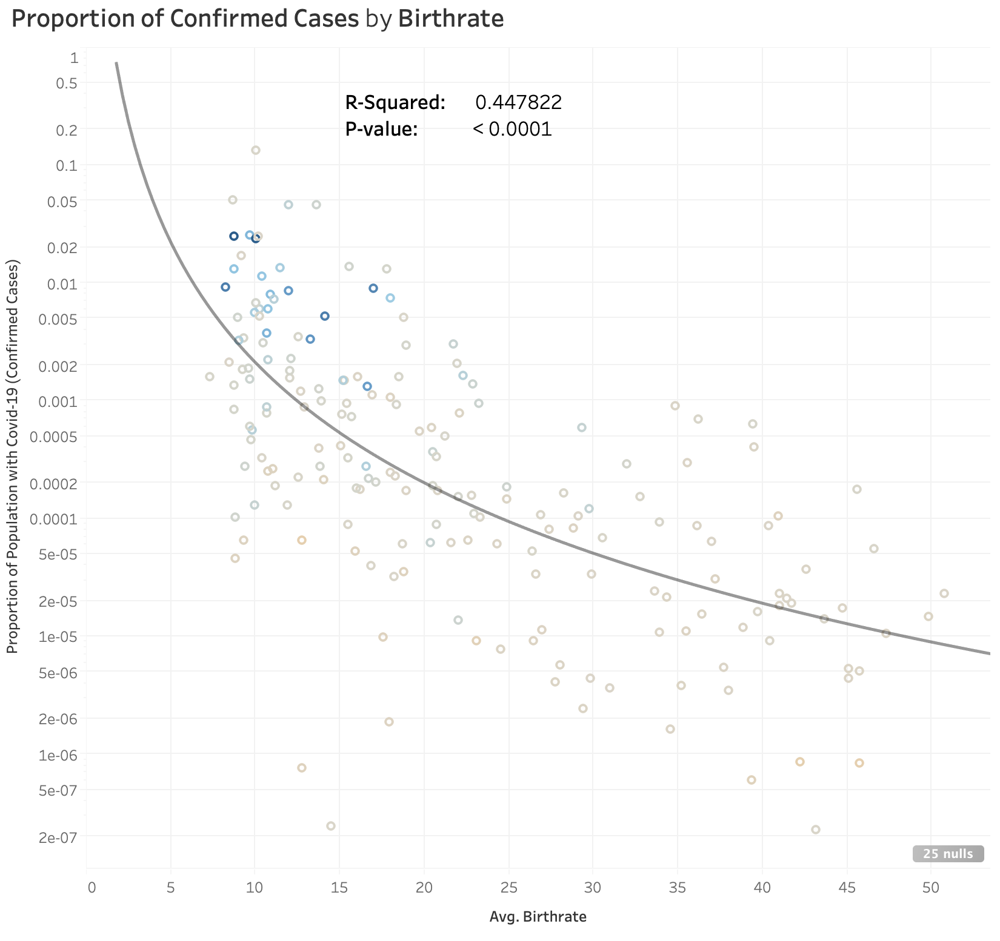
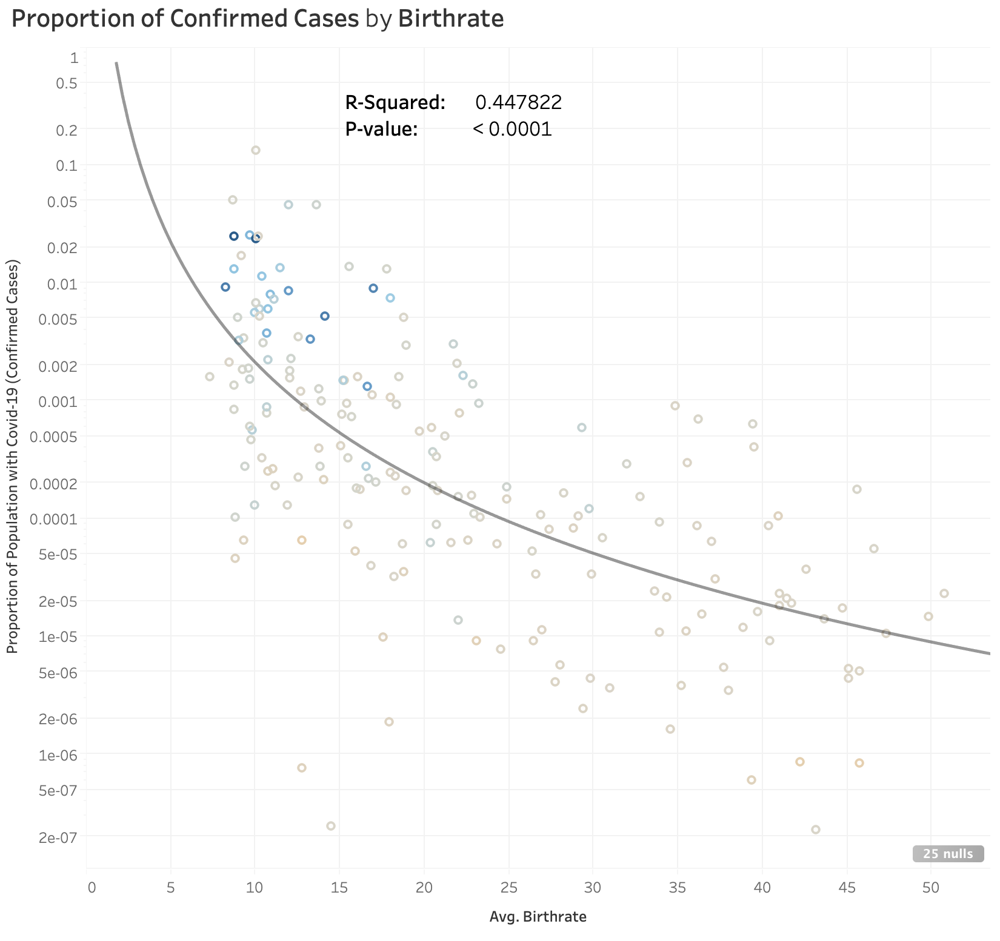
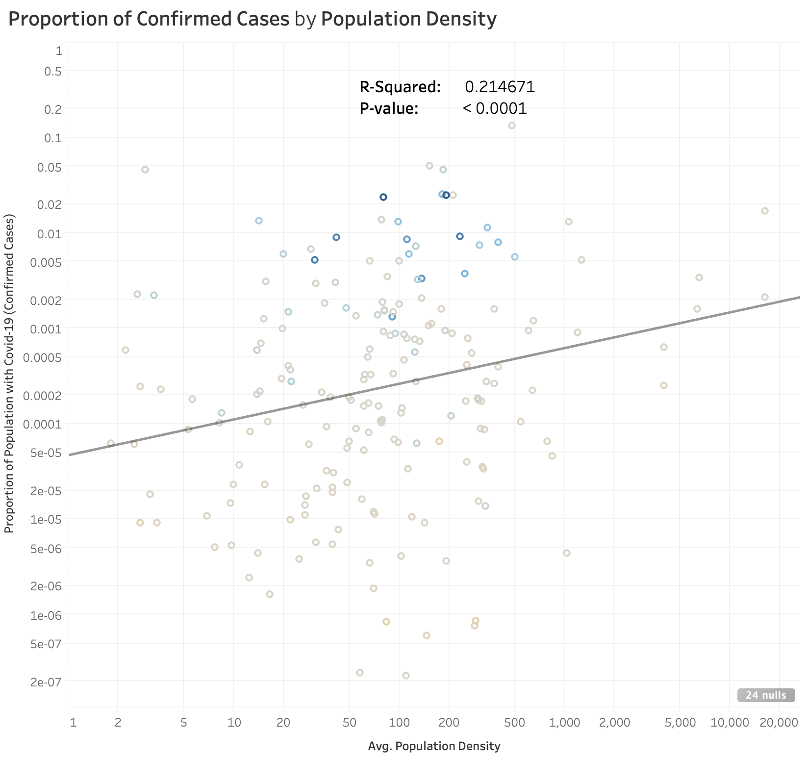
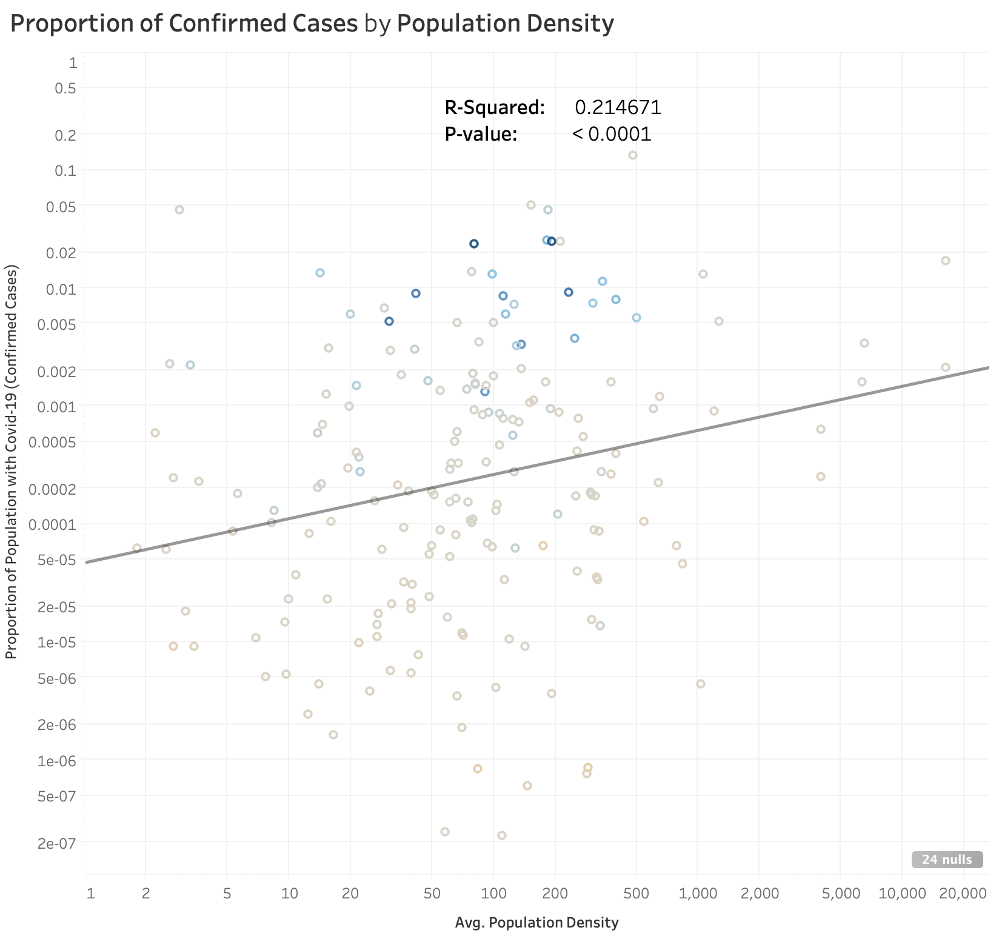

Cases by Country
Countries Impacted by Covid-19
Different countries have different rates of spread.
Since the first recorded case of Covid-19 in November 2019, there have been more than 1 million reported cases worldwide. Every day thousands of new cases of this infectious disease are being reported.
We can see that different countries have different rates of spread. Countries labeled in red, US, Spain, and Italy, have some of the fastest growing cases while countries in blue, Japan and South Korea, have some of the slowest. Please click the link above to explore additional countries in a live dashboard.
However, according to researchers, Covid-19 is not mutating very fast compared to other viruses (Huang 2020). This means we should not see drastically different fatality or spread rates in different places/countries. From the graph above, we can see that is not true, some countries are clearly more impacted by Covid-19 than others. Below, we will look into other possible factors that may be affecting Covid-19.
You can select more countries to add to the graph in the country/region menu box.
Government Measures

Country-Level Attributes
Number of phones and birthrate are correlated with virus spread.
 

We can also see that the average number of phones per 1000 people is positively correlated with spread while average birthrate is negatively correlated with spread. Average number of phones could be a proxy for income; i.e. countries with higher income per person tend to have higher number of cases. Similarly, countries with higher birthrates are correlated with lower Covid-19 cases. There are studies that show less-developed countries tend to have higher birthrates rates (Price 2013). This means Covid-19 appears to be spreading faster in developed countries. Please click the link above to explore more country-level factors.
Countries Impacted by Covid-19

Government Measures
Different country responses to Covid-19.
One big difference between countries is how the government responds in times of crisis. China is currently the most successful case study of a fast growing country "flattening the curve". Comparing what they did to South Korea (a country with low growth the whole time) and US (a fast growth country), we can see how the government approaches were different.
We can see that South Korea implemented social distancing measures and made several public announcements early in their curve. Near the peak of their curve, they mandated remote work and mask-wearing for everyone. Similarly with China, we can see near the peak of their curve, they suspended businesses and mandated remote schooling and work. They also announced cash hygiene and public mask-wearing guidelines.
The US has implemented remote work and the suspension of businesses, but they have not required the wearing of masks in public yet. This seems to indicate social distancing measures and mask wearing may be good protective measures other countries should take. Please click the link above to explore and compare other countries and their government measures.
Country-Level Attributes
Area and Population Density are correlated with virus spread.
 

We can see that Covid-19 confirmed cases is negatively correlated with average area per person by positively correlated with population density. Basically, countries that are more spread out with more area between people tend to have lower spread rates while densely populated countries tend to have higher spread rates.
Country-Level Attributes